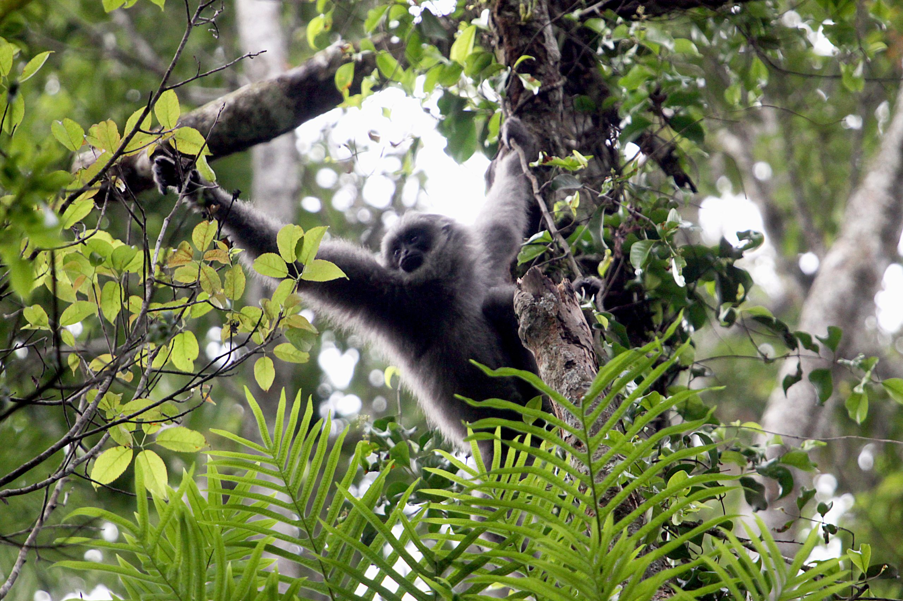
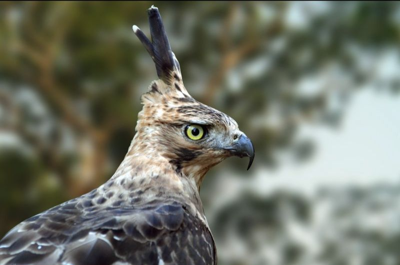
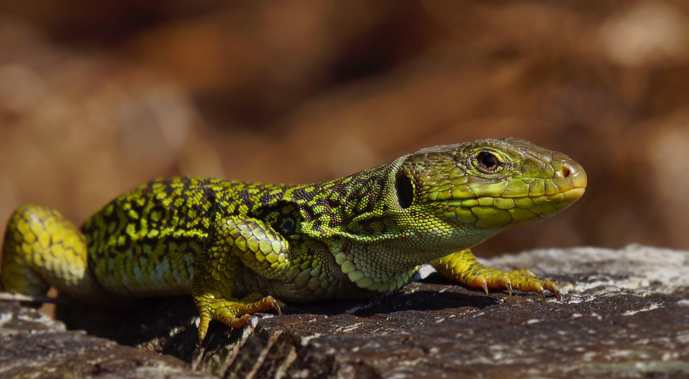
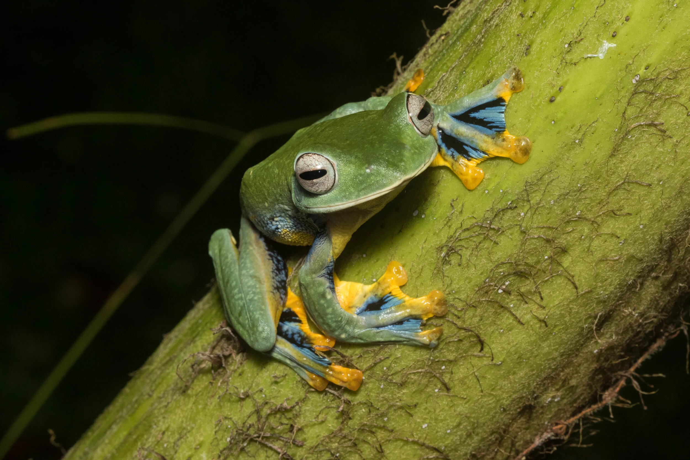
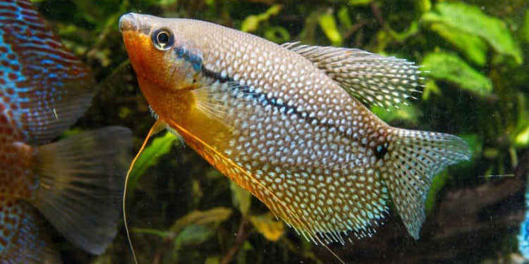
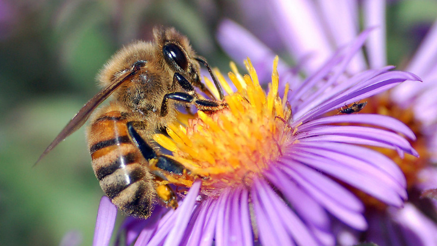

🌾

Mamalia
Hewan berdarah panas, berambut, menyusui anak. Dari paus biru hingga tikus jerboa.
~5.500 spesies
Kelas Mammalia
Jelajahi ribuan spesies fauna dari seluruh penjuru dunia. Pelajari cara mereka bertahan hidup, berkembang biak, beradaptasi, dan berjuang di tengah ancaman kepunahan.

Klasifikasi ilmiah terverifikasi
Peta distribusi per spesies
Update dari jurnal ilmiah
Tentang Wildpedia
Wildpedia hadir bukan hanya untuk mendaftar nama-nama hewan. Kami mendokumentasikan kisah nyata kehidupan liar — bagaimana seekor cheetah membesarkan anaknya sendirian, bagaimana penyu menavigasi samudra menggunakan medan magnet bumi, atau bagaimana burung hantu berburu dalam kegelapan total.
Setiap profil fauna di Wildpedia mencakup mekanisme reproduksi, strategi survival, adaptasi unik, serta status konservasi terkini dari IUCN Red List.
Jelajahi Berdasarkan Kelompok
Setiap kelompok punya cerita evolusi dan keunikannya sendiri

Hewan berdarah panas, berambut, menyusui anak. Dari paus biru hingga tikus jerboa.

Vertebrata bersayap dengan tulang berongga. Penguasa langit dari kutub hingga khatulistiwa.

Ektoterm bersisik yang menguasai darat, air, dan bahkan laut. Keturunan dinosaurus.

Makhluk dua alam — darat dan air. Kulit lembab mereka sensitif sebagai indikator ekosistem.

Vertebrata akuatik tertua. Menguasai seluruh perairan — tawar, payau, hingga laut dalam.

Penghuni tersembunyi bumi. Lebih dari 80% spesies hewan di Bumi adalah invertebrata.
Profil Mendalam
Setiap kartu membawa kamu ke habitatnya langsung
Mamalia darat tercepat di dunia dengan kecepatan hingga 112 km/jam dalam waktu 3 detik. Berbeda dengan kucing besar lain, cheetah tidak bisa mengaum — mereka mengeluarkan suara seperti burung.
🥚 Reproduksi: Vivipar. Betina melahirkan 3–5 anak setelah gestasi 90–95 hari. Anak cheetah lahir buta dan berbulu abu-abu tebal (disebut mantle) yang diduga sebagai kamuflase dari predator. Betina membesarkan anak sendirian tanpa bantuan jantan, berpindah sarang setiap beberapa hari untuk menghindari singa dan leopard.
⚔️ Survival Skill: Cheetah berburu menggunakan penglihatan, bukan penciuman. Mereka mengincar mangsa, menyelinap dekat (hingga 50–60 m), lalu mengejar. Cakar semi-retractable memberi cengkeraman seperti sepatu spike. Tulang belakang fleksibel memungkinkan langkah 7–8 meter per stride. Namun cheetah sering kehilangan mangsanya pada singa atau hyena — mereka terlalu lelah setelah mengejar untuk melawan.
Reptil laut kuno yang telah mengarungi samudra selama 100 juta tahun. Namanya berasal dari lapisan lemak hijau di bawah cangkangnya, bukan warna kulitnya. Navigator bintang dan magnet bumi yang luar biasa.
🥚 Reproduksi: Ovipar. Betina kembali ke pantai tempat ia menetas untuk bertelur — sebuah fenomena disebut natal homing. Mereka menggunakan medan magnet bumi sebagai GPS alami. Setiap musim bertelur, seekor betina bisa menggali 3–7 sarang berisi 100–200 telur. Suhu pasir menentukan jenis kelamin: suhu lebih hangat menghasilkan lebih banyak betina (thermosex determination).
⚔️ Survival Skill: Tukik (bayi penyu) memiliki tingkat kelangsungan hidup sangat rendah — hanya 1 dari 1.000 yang mencapai dewasa. Mereka mengandalkan cahaya bintang dan bulan untuk menemukan laut. Di lautan, penyu dewasa menyelam hingga 900 meter dan menahan napas 4–7 jam. Cangkang keras melindungi dari predator, namun tidak dari jaring ikan dan plastik laut.
Predator puncak hutan Jawa yang menjadi inspirasi lambang Garuda Pancasila. Jangkauan wilayah berburu satu pasang elang bisa mencapai 100 km². Populasinya tinggal 250–600 ekor di alam liar.
🥚 Reproduksi: Ovipar, monogami seumur hidup. Pasangan elang Jawa membangun sarang (eyrie) dari ranting tebal di pohon tinggi lebih dari 30 meter. Betina bertelur hanya 1 butir per musim kawin, dan diinkubasi bersama selama 47 hari. Anak elang tinggal di sarang hingga 3–4 bulan. Karena hanya satu telur per tahun, pemulihan populasi sangat lambat.
⚔️ Survival Skill: Elang Jawa berburu menggunakan teknik perch-and-strike — bertengger diam lalu menukik menangkap mangsa dengan kecepatan 150 km/jam. Penglihatan mereka 8x lebih tajam dari manusia, mampu melihat mangsa dari ketinggian 1 km. Bulu jambul di kepala berfungsi sebagai komunikasi visual — berdiri tegak saat terancam atau excited.
Primata paling soliter dan paling cerdas setelah manusia dan simpanse. Mereka membuat "payung" dari daun saat hujan, menggunakan tongkat untuk memancing serangga, dan belajar dari induknya selama 8 tahun.
🥚 Reproduksi: Vivipar. Orang utan memiliki interval kelahiran terpanjang di antara mamalia darat — betina melahirkan hanya setiap 7–9 tahun sekali. Bayi disusui hingga 3–4 tahun dan tinggal bersama induk hingga 8 tahun untuk belajar survival. Betina remaja sering mengamati induk lain mengasuh anak — mirip "magang". Pejantan dominan (flanged) memiliki bantalan pipi yang besar sebagai sinyal status reproduksi.
⚔️ Survival Skill: Orang utan adalah arsitek alami — setiap malam mereka membangun sarang baru dari ranting dan daun di ketinggian 15–30 meter hanya dalam 5 menit. Mereka menghafal pohon buah di wilayah jelajah ratusan km² dan merencanakan rute berdasarkan musim buah. Penggunaan alat mereka termasuk: daun sebagai mangkuk air, dahan panjang untuk mengambil madu lebah, dan batu untuk memecah kulit buah keras.
Ikan terbesar yang pernah hidup di Bumi — mencapai 18 meter dan 20 ton. Namun sang raksasa ini adalah pemakan plankton paling jinak. Mulut lebarnya menyaring ribuan liter air per jam untuk mendapat makanan.
🥚 Reproduksi: Ovovivipar — satu-satunya ikan bertulang rawan dengan strategi ini. Telur menetas di dalam tubuh betina, dan anak lahir hidup. Betina bisa mengandung hingga 300 embrio sekaligus dalam berbagai tahap perkembangan. Ini disebut superfoetation — betina bisa menyimpan sperma dari perkawinan sebelumnya dan membuahi telur secara bertahap. Hiu paus baru matang secara seksual di usia 25–30 tahun.
⚔️ Survival Skill: Filter feeder raksasa ini berenang dengan mulut terbuka lebar, menyaring plankton, telur ikan, dan ikan kecil dari air laut. Kulit mereka setebal 10 cm — lapisan pelindung terkuat di antara semua hewan. Pola bintik di tubuhnya unik seperti sidik jari manusia, digunakan para ilmuwan untuk identifikasi individual. Hiu paus dapat melakukan penyelaman vertikal mendadak hingga 700 meter dalam hitungan menit.
Satu-satunya "naga" nyata di dunia — kadal monitor terbesar yang ada. Komodo dapat merasakan bangkai dari jarak 9 km menggunakan lidah bifida yang mengambil partikel kimia dari udara dan tanah.
🥚 Reproduksi: Ovipar, dengan kemampuan langka yang disebut partenogenesis — betina bisa menghasilkan telur yang menetas tanpa pembuahan jantan. Telur-telur yang tidak dibuahi ini menghasilkan anak jantan semua (ZZ). Betina bertelur 15–30 butir di lubang galian atau sarang megapoda, dan menginkubasi selama 8–9 bulan. Anak komodo yang baru menetas langsung memanjat pohon untuk menghindari kanibalisme dari komodo dewasa.
⚔️ Survival Skill: Komodo menggunakan strategi ambush predator — bersembunyi di semak dan menyerang dengan satu gigitan kuat. Racun di kelenjar ludah mereka mengandung antikoagulan yang mencegah pembekuan darah mangsa. Bahkan rusa besar yang berhasil kabas pun akan mati dalam beberapa hari karena luka yang tak bisa berhenti berdarah. Komodo lalu mengikuti mangsa dengan sabar menggunakan penciuman dahsyatnya.

Kupu-kupu paling ikonik di dunia dengan sayap oranye-hitam yang khas. Setiap tahun melakukan migrasi luar biasa sejauh 4.500 km dari Kanada ke Meksiko — perjalanan yang membutuhkan 3-4 generasi untuk diselesaikan.
🥚 Reproduksi: Ovipar dengan metamorfosis sempurna (holometabola) — telur → larva (ulat) → pupa (kepompong) → imago (kupu). Betina meletakkan 300–500 telur satu per satu di daun milkweed. Fenomena unik: generasi musim gugur (Methuselah generation) hidup hingga 8 bulan untuk melakukan migrasi, jauh lebih lama dari generasi musim panas yang hanya 2–6 minggu.
⚔️ Survival Skill: Monarch menyimpan racun dari tanaman milkweed di tubuhnya sejak fase ulat — warna oranye cerahnya adalah peringatan bagi predator (aposematisme). Navigasi migrasi menggunakan kompas matahari internal dan medan magnet bumi. Yang paling menakjubkan: tidak ada satu individu pun yang pernah menempuh rute migrasi lengkap — pengetahuan rute ini diturunkan secara genetik.
Amfibia unik dengan kemampuan melompat tinggi dan membuat sarang busa untuk telurnya. Hidup di pepohonan hutan hujan tropis, mereka adalah indikator kesehatan ekosistem karena sangat sensitif terhadap perubahan lingkungan.
🥚 Reproduksi: Ovipar dengan strategi unik — jantan membuat "sarang busa" dari air liur dan sperma di dedaunan. Betina meletakkan telur di sarang ini, lalu jantan menjaga telur hingga menetas menjadi berudu. Siklus hidup: telur → berudu (di air) → katak muda (naik ke pohon) → dewasa.
⚔️ Survival Skill: Katak pohon memiliki cakram isap di jari kaki untuk menempel di daun basah. Kulitnya beracun dan berwarna cerah sebagai peringatan bagi predator. Mereka adalah indikator lingkungan — populasi menurun drastis akibat deforestasi dan polusi air, menandai kerusakan ekosistem hutan.
Status Konservasi IUCN
IUCN Red List adalah standar global untuk mengukur risiko kepunahan suatu spesies. Memahami status ini adalah langkah pertama dalam konservasi.
Bergabung KonservasiHubungi Kami
Kami terbuka untuk peneliti, naturalis, fotografer wildlife, dan siapapun yang ingin membantu mendokumentasikan fauna dunia.